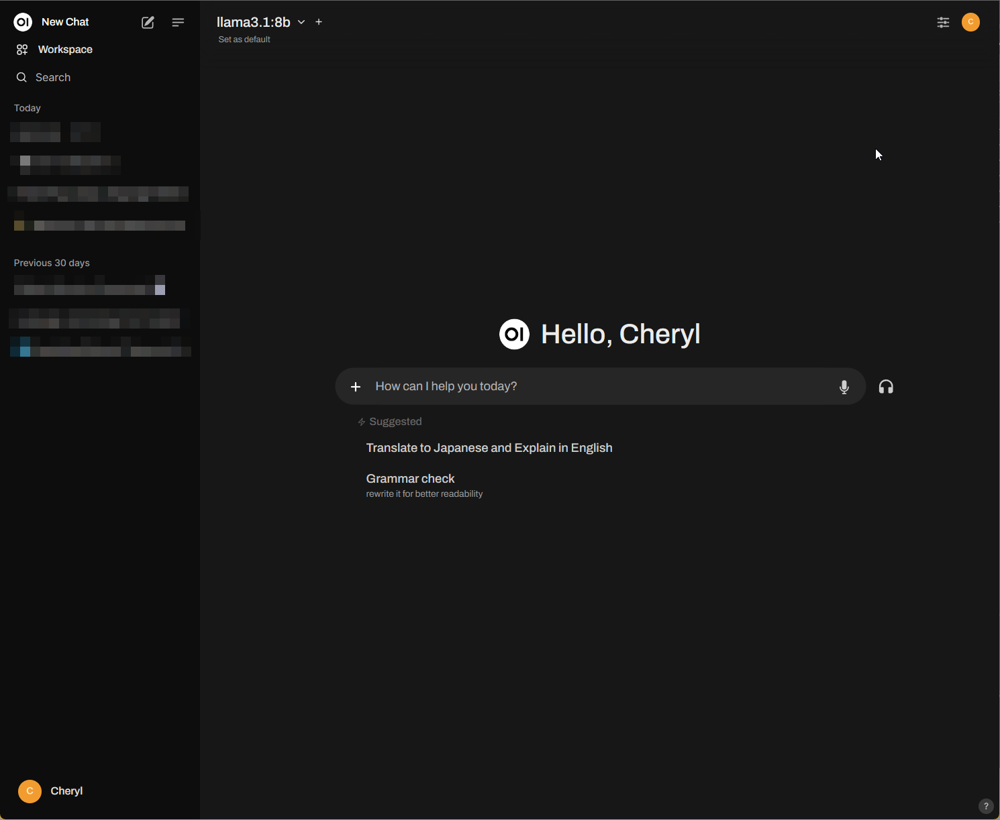
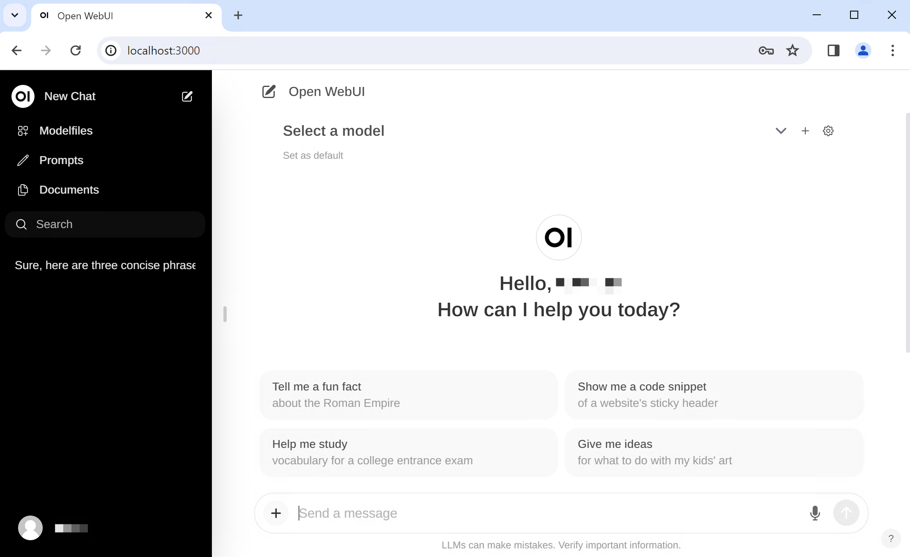
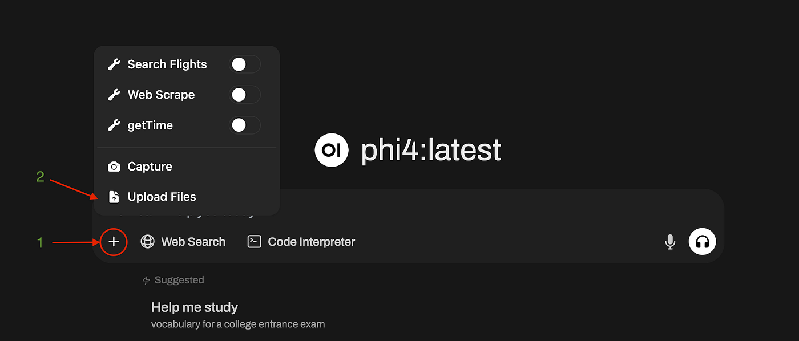
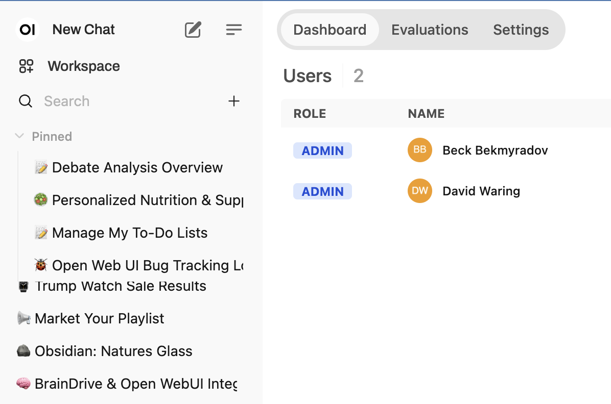

The Freedom AI Stack · Self-Hosted · Open Source
Plataforma de IA auto-hospedada, extensível e agnóstica de provedores. Conecte qualquer modelo — local ou nuvem — com uma interface unificada, poderosa e completamente sob seu controle.
Open WebUI é uma plataforma de interface de usuário auto-hospedada para Inteligência Artificial. Nasceu como uma alternativa ao ChatGPT para quem roda modelos locais com Ollama, mas evoluiu para se tornar um "sistema operacional de IA" completo — agnóstico de provedores, extensível com Python e projetado para operar totalmente offline ou em nuvem.
2023 por Timothy Jaeryang Baek. Originalmente chamado "Ollama WebUI", renomeado para Open WebUI em 2024.
BSD 3-Clause com restrição de branding. Open source com código público no GitHub.
A16z Open Source AI Grant 2025 · Mozilla Builders 2024 · GitHub Accelerator 2024
373.000+ membros ativos. 290 milhões de downloads. 132K+ stars no GitHub.

A interface do Open WebUI oferece uma experiência similar ao ChatGPT, mas totalmente auto-hospedada e com suporte a múltiplos modelos e provedores simultaneamente.
"Open WebUI is being built so everyone can run AI for themselves. Not rent it. Not depend on it. Own it. Self-sufficient, adaptable, and ready for wherever humanity goes — from a laptop to the stars."
— Missão oficial do Open WebUI
Criado por Timothy Jaeryang Baek como interface web para o Ollama. Foco inicial em modelos locais.
Expansão para suportar APIs compatíveis com OpenAI. Abertura para múltiplos provedores.
Reconhecimento pela comunidade open source. Explosão de adoção com 100M+ downloads.
A16z Open Source AI Grant. Lançamento de planos Enterprise com SSO, RBAC e suporte LTS.
Comunidade de 373K membros. Desktop App nativo em desenvolvimento. Workflows visuais planejados.
O Open WebUI oferece múltiplas formas de instalação para atender desde usuários individuais até implantações corporativas em Kubernetes. Escolha o método que melhor se adapta ao seu ambiente.
O método mais simples. Funciona em qualquer sistema com Docker instalado. Sem Python, sem dependências.
# Instalação básica (sem Ollama local)
docker run -d -p 3000:8080 \
--add-host=host.docker.internal:host-gateway \
-v open-webui:/app/backend/data \
--name open-webui \
--restart always \
ghcr.io/open-webui/open-webui:main
# Acesse em: http://localhost:3000Ideal para quem já tem Python 3.11+ instalado. Sem necessidade de Docker.
# Instalar via pip
pip install open-webui
# Iniciar o servidor
open-webui serve
# Acesse em: http://localhost:8080
# (porta padrão diferente do Docker)Sobe Open WebUI + Ollama juntos em um único comando. Ideal para uso local completo.
# docker-compose.yml
version: '3.8'
services:
ollama:
image: ollama/ollama:latest
volumes:
- ollama:/root/.ollama
restart: unless-stopped
open-webui:
image: ghcr.io/open-webui/open-webui:main
depends_on:
- ollama
ports:
- "3000:8080"
environment:
- OLLAMA_BASE_URL=http://ollama:11434
volumes:
- open-webui:/app/backend/data
restart: unless-stopped
volumes:
ollama:
open-webui:# Subir tudo
docker compose up -d
# Verificar status
docker compose ps
# Baixar um modelo no Ollama
docker exec -it ollama ollama pull llama3.2Para implantações em escala corporativa com alta disponibilidade.
# Adicionar repositório Helm
helm repo add open-webui https://helm.openwebui.com/
helm repo update
# Instalar com valores padrão
helm install open-webui open-webui/open-webui \
--namespace open-webui \
--create-namespace
# Instalar com configuração personalizada
helm install open-webui open-webui/open-webui \
--namespace open-webui \
--create-namespace \
--set persistence.enabled=true \
--set service.type=LoadBalancerPara rodar modelos locais com aceleração GPU. Requer NVIDIA Container Toolkit.
# Open WebUI + Ollama com GPU
docker run -d -p 3000:8080 \
--gpus=all \
-v ollama:/root/.ollama \
-v open-webui:/app/backend/data \
--name open-webui-gpu \
--restart always \
ghcr.io/open-webui/open-webui:ollama
# Verificar uso de GPU
docker exec open-webui-gpu nvidia-smi| Variável | Padrão | Descrição |
|---|---|---|
OLLAMA_BASE_URL | http://localhost:11434 | URL do servidor Ollama local |
OPENAI_API_KEY | — | Chave de API da OpenAI |
OPENAI_API_BASE_URL | https://api.openai.com/v1 | URL base da API OpenAI (ou compatível) |
DATABASE_URL | SQLite local | URL do banco de dados (PostgreSQL para produção) |
SECRET_KEY | Gerada automaticamente | Chave secreta para JWT e sessões |
WEBUI_NAME | Open WebUI | Nome da instância (rebranding) |
ENABLE_SIGNUP | true | Permitir novos cadastros |
DEFAULT_USER_ROLE | pending | Papel padrão de novos usuários |
REDIS_URL | — | URL do Redis para sessões distribuídas |
STORAGE_PROVIDER | local | Provedor de armazenamento: local, s3, gcs, azure |
O Open WebUI não é apenas um chat. É uma plataforma completa de produtividade com IA que unifica conversas, conhecimento, ferramentas, voz, visão e automação em uma única interface.
Converse com qualquer modelo, troque mid-conversation, nunca perca contexto.
Execute dois modelos lado a lado e compare respostas em tempo real. Ideal para avaliar qualidade e custo.
Troque de modelo durante a conversa mantendo todo o histórico e contexto. Sem perda de dados.
Anexe PDFs, imagens, código, planilhas. O modelo analisa e responde com base no conteúdo.
IA pesquisa a web em tempo real e cita fontes. Integração com SearXNG, Google, Bing e mais.
O modelo lembra fatos sobre você entre conversas. Memória configurável e editável pelo usuário.
Continue digitando enquanto o modelo responde. Mensagens são enfileiradas e enviadas automaticamente.
Pastas, tags, pins para organizar conversas. Busca full-text em todo o histórico.
Edite qualquer mensagem anterior e regenere a partir daquele ponto. Branching de conversas.

Dê ao seu modelo acesso aos seus documentos — e deixe ele encontrar o que importa.
ChromaDB, PGVector, Qdrant, Milvus, Elasticsearch, OpenSearch, Pinecone, Weaviate e mais.
BM25 + busca vetorial com reranking por cross-encoder. Melhor recall e precisão.
Tika, Docling, Azure Document Intelligence, Mistral OCR e loaders customizados.
Modelos buscam e leem documentos de forma autônoma via function calling.
Injete documentos inteiros sem chunking. Sem perda de contexto, sem alucinações por fragmentação.
Adicione URLs diretamente à base de conhecimento. O sistema faz scraping e indexa automaticamente.

Fale, mostre imagens, gere conteúdo. Tudo em uma interface.
Transcrição de voz em tempo real. Suporte a Whisper local, OpenAI Whisper API e provedores customizados.
Leitura das respostas em voz alta. Suporte a OpenAI TTS, ElevenLabs, Azure e motores locais.
Modo hands-free com detecção de atividade de voz (VAD). Conversas naturais sem teclado.
DALL-E 3, Gemini Imagen, ComfyUI, Automatic1111. Gere e edite imagens diretamente no chat.
Envie imagens para análise. Suporte a todos os modelos multimodais (GPT-4V, Claude, LLaVA, etc.).
Envie vídeos para análise por modelos compatíveis. Extração de frames e transcrição automática.
Conecte um ambiente de computação real. A IA escreve código, executa, lê o output, corrige erros e itera.
Roda comandos reais e retorna output. Python, bash, node — qualquer linguagem disponível no ambiente.
Navegue, faça upload, download e edite arquivos na barra lateral. Integração completa com o filesystem.
Preview ao vivo de projetos web diretamente dentro do Open WebUI. Veja o resultado em tempo real.
Execute em container Docker isolado ou diretamente no metal. Controle total sobre o nível de segurança.
Espaços persistentes e compartilhados onde humanos e modelos de IA participam da mesma conversa.
Invoque qualquer modelo na conversa com @nome. @gpt-4o para rascunhar, @claude para criticar.
Respostas em thread, pins e reações com emoji. Organização natural de discussões complexas.
Canais públicos, privados, por grupo e mensagens diretas. Controle granular de quem vê o quê.
Modelos buscam e sintetizam informações de canais anteriores de forma autônoma.
Open WebUI é uma plataforma, não um produto fechado. Adicione qualquer capacidade com Python, OpenAPI ou MCP.
Scripts Python que rodam no chat. Editor de código embutido. Instale da comunidade com 1 clique.
Framework modular para filtros, provedores e lógica customizada. Intercepte e transforme mensagens.
Suporte nativo a Model Context Protocol (Streamable HTTP). Conecte servidores MCP de terceiros.
Auto-descoberta de ferramentas de qualquer endpoint compatível com OpenAPI.
Conjuntos de instruções em Markdown que ensinam modelos como abordar tarefas. Templates com variáveis.
373K membros compartilhando prompts, modelos, ferramentas e funções em openwebui.com.
O Open WebUI é construído com uma arquitetura moderna e separada em frontend e backend, permitindo escalabilidade, extensibilidade e manutenção independente de cada camada.
O Open WebUI foi projetado desde o início para ser agnóstico de provedores. Conecte quantos quiser simultaneamente — todos os modelos aparecem em um único dropdown unificado.
| Provider | Tipo | Protocolo | Modelos Notáveis | Requer API Key |
|---|---|---|---|---|
| Ollama | Local | Ollama API | Llama 3.3, Mistral, Gemma 3, Phi-4 | Não |
| OpenAI | Cloud | OpenAI API | GPT-4o, GPT-4.1, o3, o4-mini | Sim |
| Anthropic | Cloud | OpenAI-compat. | Claude 3.7 Sonnet, Haiku, Opus | Sim |
| Google Gemini | Cloud | OpenAI-compat. | Gemini 2.5 Pro, 2.0 Flash | Sim |
| Groq | Cloud | OpenAI-compat. | Llama 3.3, Mixtral (ultra-rápido) | Sim |
| DeepSeek | Cloud | OpenAI-compat. | DeepSeek R1, V3 | Sim |
| Mistral AI | Cloud | OpenAI-compat. | Mistral Large, Small | Sim |
| OpenRouter | Cloud | OpenAI-compat. | 200+ modelos unificados | Sim |
| Azure OpenAI | Cloud | OpenAI-compat. | GPT-4o, GPT-4 Turbo | Sim |
| AWS Bedrock | Cloud | OpenAI-compat. | Claude, Llama, Titan | Sim |
| vLLM | Local | OpenAI-compat. | Qualquer modelo HuggingFace | Não |
| llama.cpp | Local | OpenAI-compat. | Qualquer modelo GGUF | Não |
| LM Studio | Local | OpenAI-compat. | Qualquer modelo suportado | Não |
Clique no ícone de usuário → Admin Panel → Aba "Connections"
Clique em "+" para adicionar novo provider. Insira a URL base e a chave de API.
O Open WebUI detecta automaticamente os modelos disponíveis via endpoint /models.
Todos os modelos de todos os providers aparecem em um único dropdown unificado no chat.

O Open WebUI permite trocar de modelo durante uma conversa ativa sem perder o histórico. O contexto completo (todas as mensagens anteriores) é enviado ao novo modelo automaticamente. Você também pode executar dois modelos simultaneamente na mesma janela para comparar respostas lado a lado.
O Open WebUI é open source e pode ser customizado, forkado e redistribuído — com regras claras sobre o que é permitido em cada cenário. Entenda a licença antes de fazer seu fork.
Modifique completamente o CSS. Crie temas customizados. Altere fontes, cores, layout.
Configure o nome exibido na interface via variável de ambiente.
Desative signup público, configure SSO/OIDC, integre com LDAP corporativo.
Customize a mensagem de boas-vindas, sugestões de prompts e layout da home.
Configure qual modelo é selecionado por padrão para novos usuários.
Defina prompts de sistema globais que se aplicam a todos os usuários ou grupos.
# 1. Fork no GitHub (via interface web ou CLI)
gh repo fork open-webui/open-webui --clone --remote
# 2. Entrar no diretório
cd open-webui
# 3. Criar branch para suas modificações
git checkout -b meu-fork-customizado
# 4. Instalar dependências de desenvolvimento
npm install # Frontend
pip install -r backend/requirements.txt # Backend
# 5. Rodar em modo desenvolvimento
npm run dev # Frontend (porta 5173)
cd backend && uvicorn main:app --reload # Backend (porta 8080)
# 6. Build para produção
npm run build
docker build -t meu-owui:latest .Se você precisa de rebranding completo (remover "Open WebUI" com mais de 50 usuários), a licença Enterprise é a solução. Ela inclui também: suporte LTS, SLA, suporte dedicado e recursos exclusivos de governança. Contato: openwebui.com/enterprise
Para organizações que precisam de governança rigorosa, conformidade regulatória e suporte dedicado. Do startup à empresa global.
Controle de acesso baseado em funções. Defina permissões por usuário, grupo e recurso. Restrinja acesso a modelos específicos por departamento.
Autenticação federada com qualquer provedor de identidade. Integração com Active Directory, Okta, Azure AD, Google Workspace.
Provisionamento automatizado de usuários e grupos. Sincronização bidirecional com seu diretório corporativo.
Dashboards de uso com volume de mensagens, consumo de tokens e rastreamento de custos por usuário e modelo.
Traces, métricas e logs para sua stack de observabilidade. Integração com Datadog, Grafana, Jaeger e mais.
Sessões via Redis, múltiplos workers, múltiplos nós. Deploy em Kubernetes com Helm para alta disponibilidade.
Versões com suporte de longo prazo (Long-Term Support). SLA garantido e suporte dedicado.
Remova ou substitua completamente o branding "Open WebUI". Sua marca, sua identidade visual.
| Recurso | Open Source | Enterprise |
|---|---|---|
| Todas as funcionalidades core | ✅ | ✅ |
| Multi-provider | ✅ | ✅ |
| RAG & Knowledge | ✅ | ✅ |
| RBAC básico | ✅ | ✅ |
| SSO / OIDC | ✅ | ✅ |
| SCIM 2.0 | ❌ | ✅ |
| Rebranding completo (>50 users) | ❌ | ✅ |
| Suporte LTS | ❌ | ✅ |
| SLA garantido | ❌ | ✅ |
| Suporte dedicado | ❌ | ✅ |
| OpenTelemetry avançado | Parcial | ✅ |
Sim! O Open WebUI foi projetado para operar completamente offline. Quando usado com Ollama e modelos locais (Llama, Mistral, etc.), nenhum dado sai da sua máquina. A única exceção é se você configurar providers em nuvem (OpenAI, Anthropic, etc.) ou habilitar busca na web.
Sim! Você pode conectar quantos providers quiser simultaneamente. Ollama local + OpenAI + Anthropic + Groq — todos ao mesmo tempo. Todos os modelos aparecem em um único dropdown unificado. Adicione novos providers em Admin Settings → Connections.
Sim! O Open WebUI suporta hotswap de modelos mid-conversation. O histórico completo da conversa é preservado e enviado ao novo modelo. Você também pode rodar dois modelos simultaneamente para comparar respostas lado a lado.
Sim, o código é público no GitHub sob BSD 3-Clause com restrição de branding. Você pode usar, modificar e distribuir livremente. A única restrição é que você não pode remover o branding "Open WebUI" em implantações com mais de 50 usuários sem uma licença Enterprise.
Sim! Você pode fazer fork e criar seu próprio produto. Para implantações com até 50 usuários, você pode inclusive alterar o branding. Para mais de 50 usuários com rebranding, é necessária a licença Enterprise. Modificações técnicas (UI, features, integrações) são sempre livres.
O RAG (Retrieval-Augmented Generation) permite que o modelo busque informações nos seus documentos. Formatos suportados incluem: PDF, DOCX, TXT, MD, CSV, XLSX, HTML, JSON e mais. O sistema usa busca híbrida (BM25 + vetorial) com reranking para máxima precisão. Você pode escolher entre 9 bancos de dados vetoriais diferentes.
Quando auto-hospedado com modelos locais, nenhum dado sai da sua infraestrutura. Você tem controle total. Se usar providers em nuvem (OpenAI, etc.), os dados são enviados para esses serviços conforme suas políticas de privacidade. O Open WebUI em si não coleta dados dos seus usuários.
# Docker
docker pull ghcr.io/open-webui/open-webui:main
docker stop open-webui && docker rm open-webui
# Re-execute o comando de instalação original
# pip
pip install --upgrade open-webui
# Helm
helm repo update
helm upgrade open-webui open-webui/open-webui -n open-webuiNão! O Open WebUI em si roda perfeitamente em CPU. A GPU é necessária apenas para inferência de modelos locais (via Ollama, vLLM, etc.) se você quiser velocidade máxima. Para modelos em nuvem (OpenAI, Anthropic), a GPU não é necessária em nenhum momento.
Sim! O Open WebUI é multi-usuário por design. Suporta RBAC, grupos, SSO/OIDC e LDAP. Para equipes pequenas, a versão open source é suficiente. Para grandes organizações com necessidades de governança avançada, a versão Enterprise oferece SCIM 2.0, SLA e suporte dedicado.
Sim! O Open WebUI tem suporte nativo ao Model Context Protocol (MCP) via Streamable HTTP. Você pode conectar servidores MCP de terceiros (como o Firecrawl, GitHub MCP, etc.) diretamente na interface. Além disso, suporta OpenAPI servers para auto-descoberta de ferramentas.
O roadmap oficial inclui: Desktop App nativo (em desenvolvimento — sem Docker, sem terminal), AI Workflow Builder visual (arrastar e soltar pipelines), Tarefas Agendadas (automação recorrente), Fine-tuning integrado (datasets do seu uso), RAG Framework Modular e Perfis de Usuário para compartilhamento de configurações.
Aplicativo nativo com integração em nível de sistema. Hotkeys globais, menu bar, notificações. Um download, dois cliques, rodando. Sem Docker, sem Python, sem terminal.
Saiba exatamente quem está usando o quê, quantos tokens estão fluindo por cada modelo e quanto está custando. Breakdowns por usuário e controles de orçamento.
Arraste, solte e conecte modelos, ferramentas, bases de conhecimento e lógica em pipelines multi-step. Visual. Sem código.
Configure sua IA para trabalhar enquanto você dorme. Geração de relatórios diários, pulls de dados semanais, monitoramento automatizado.
Suas conversas e avaliações se tornam dados de treinamento. Datasets prontos para fine-tune a partir do seu uso real.
Diga a palavra e comece a falar. Sem teclado, sem clique, sem troca de aba. O futuro da interação humano-computador.